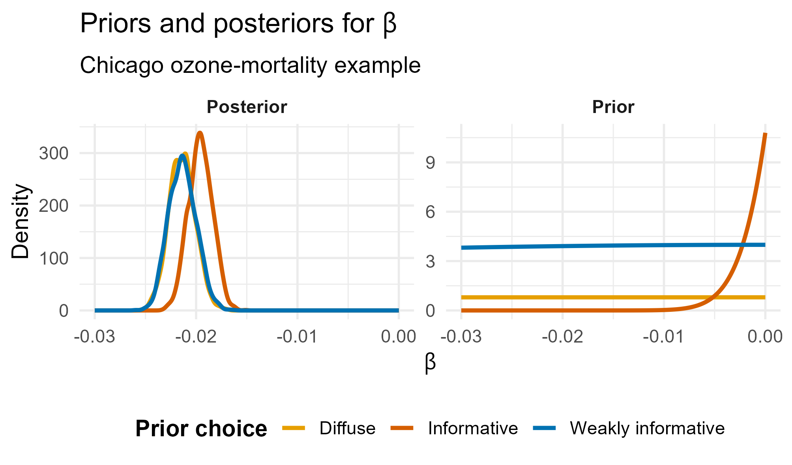
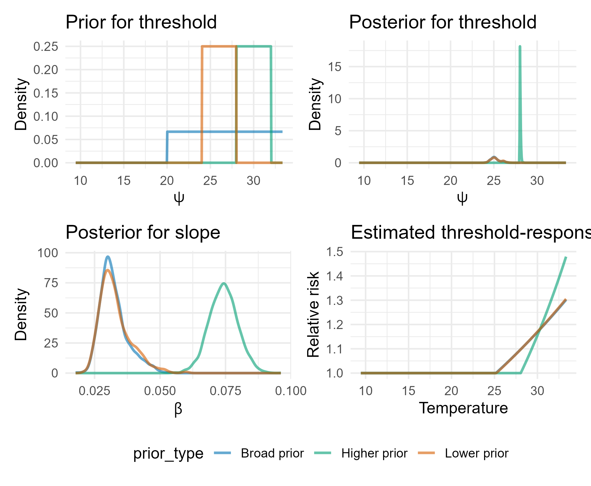
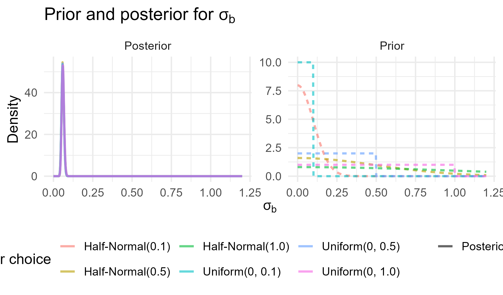

Priors
Key ideas and concepts
Aug 5, 2026
Outline
- The purpose of priors
- Different kinds of priors and their applications
- Conjugate priors
- Jeffreys priors
- Informative priors
- Hyperpriors and variance priors
A motivating question
Suppose we are studying the effect of air pollution on hospital admissions.
Should we analyse the data as if no previous studies, mechanistic knowledge, or expert understanding existed?
Bayesian inference provides a way to incorporate such information explicitly through the prior.
What is a prior?
A prior distribution describes what is known, believed, or considered plausible about an unknown parameter before observing the current data.
It may reflect:
- previous empirical studies,
- expert elicitation,
- biological or physical constraints,
- or weak assumptions used to regularize estimation.
The Bayesian framework
\[ p(\theta \mid y) \propto p(y \mid \theta)p(\theta) \]
- \(p(\theta)\): prior distribution
- \(p(y \mid \theta)\): likelihood
- \(p(\theta \mid y)\): posterior distribution
The posterior combines prior information with information from the observed data.
Why priors matter
Priors are important because:
- scientific inference rarely starts from zero knowledge,
- they allow existing evidence to be incorporated,
- they can stabilize estimation in noisy or sparse settings,
- and they make assumptions explicit.
These issues are especially important in environmental health, where effects are often small and uncertainty is substantial.
Common classes of priors
Priors can be chosen for different reasons:
- mathematical convenience,
- formal default rules,
- weak regularisation,
- or incorporation of external knowledge.
Some of the most commonly discussed classes are:
- conjugate priors
- Jeffreys priors
- vague or noninformative priors
- informative priors
Conjugate priors
A prior is conjugate if the posterior belongs to the same distributional family as the prior.
Example:
\[ Y \mid \theta \sim \text{Binomial}(n,\theta) \]
\[ \theta \sim \text{Beta}(\alpha,\beta) \]
Then:
\[ \theta \mid Y \sim \text{Beta}(\alpha + Y,\beta + n - Y) \]
Common conjugate priors
| Likelihood | Parameter | Prior | Posterior |
|---|---|---|---|
| Binomial | \(\theta\) | Beta | Beta |
| Poisson | \(\lambda\) | Gamma | Gamma |
| Exponential | \(\lambda\) | Gamma | Gamma |
| Normal mean (\(\sigma^2\) known) | \(\mu\) | Normal | Normal |
| Multinomial | \(\boldsymbol{\theta}\) | Dirichlet | Dirichlet |
Jeffreys priors
Jeffreys priors are defined using the Fisher information:
\[ p(\theta) \propto \sqrt{I(\theta)} \]
They are often used as default or “objective” priors because they are invariant under reparameterization.
Why useful?
- principled default construction
- invariant to one-to-one transformations
- theoretically elegant
Jeffreys priors
Jeffreys priors are defined using the Fisher information:
\[ p(\theta) \propto \sqrt{I(\theta)} \]
They are often used as default or “objective” priors because they are invariant under reparameterization.
Limitations:
- may be improper
- may be hard to interpret in applied settings
- are not always practically noninformative
Informative priors
An informative prior incorporates substantive prior knowledge about a parameter.
Sources may include:
- previous studies
- meta analyses
- expert elicitation
- biological or physical constraints
Informative priors
Example:
\[ \beta \sim N(0.01,0.005^2) \] This may reflect earlier evidence suggesting a small positive association.
Informative priors
Why useful?
- incorporates existing knowledge
- improves precision
- supports cumulative scientific inference
Limitation: results should be checked with sensitivity analysis.
Example: Air pollution health model
Consider a log-linear health model:
\[ Y_i \sim \text{Poisson}(\mu_i) \]
\[ \log(\mu_i) = \alpha + \beta X_i + \gamma^\top Z_i \]
- \(Y_i\) is a health outcome
- \(X_i\) is air pollution exposure
- \(Z_i\) are confounders
- \(\beta\) is the association between air pollution and health
Example: Air pollution health model
Previous epidemiologic evidence can inform the prior for \(\beta\):
\[ \beta \sim N(\mu_\beta, \sigma_\beta^2) \]
For example:
\[ \beta \sim N(0.01, 0.005^2) \]
Interpretation:
- the prior mean reflects the effect suggested by previous studies
- the prior variance reflects uncertainty in that evidence
Example: Air pollution health model
In many studies, exposure is predicted rather than directly observed.
If \(\hat{X}_i\) is an estimated exposure, we may write:
\[ X_i \sim N(\hat{X}_i, \tau_i^2) \]
and then use \(X_i\) in the health model:
\[ \log(\mu_i) = \alpha + \beta X_i + \gamma^\top Z_i \] This allows uncertainty in the exposure model to be carried through to inference on \(\beta\).
Example: Air pollution health model
Suppose health outcomes are measured repeatedly over time.
A simple longitudinal model is:
\[ Y_{it} \sim \text{Poisson}(\mu_{it}) \]
\[ \log(\mu_{it}) = \alpha + b_i + \beta X_{it} + \gamma^\top Z_{it} \]
with subject-specific random intercept: \(b_i \sim N(0, \sigma_b^2)\)
and prior on the heterogeneity parameter: \(\sigma_b \sim \text{Half-Normal}(0,1)\)
Here, priors help represent between-subject variability and account for correlation among repeated observations.
Example: ozone and all-cause mortality in Chicago
We fit a simple Bayesian Poisson regression model:
\[ Y_t \sim \text{Poisson}(\mu_t) \]
\[ \log(\mu_t) = \alpha + \beta x_t \]
where:
- \(Y_t\) is daily all-cause mortality
- \(x_t\) is daily ozone concentration (scaled)
- \(\beta\) is the log-relative risk associated with ozone
Example: ozone and all-cause mortality in Chicago
To illustrate the role of the prior, we fit the same model under three different priors for \(\beta\):
- Diffuse prior: \(N(0, 0.5)\)
- Weakly informative prior: \(N(0, 0.1)\)
- Informative prior: \(N(0.01, 0.005)\)
Prior choice and posterior inference

Example: summer temperature and mortality
In many environmental health settings, the effect of temperature may become stronger only above a critical level.
For summer mortality, a simple scientific question is:
At what temperature does risk begin to increase, and how steep is the increase above that point?
Example: summer temperature and mortality
A Bayesian threshold model allows us to estimate both:
- the threshold temperature
- the slope above the threshold
A simple linear-threshold model
Let \(Y_t\) denote daily all-cause mortality on day \(t\), and let \(T_t\) be summer temperature. We consider the model:
\[ Y_t \sim \text{Poisson}(\mu_t) \\ \log(\mu_t) = \alpha + \beta (T_t - \psi)_+ \\ (T_t - \psi)_+ = \max(T_t - \psi,0) \]
- below \(\psi\), temperature has no effect
- above \(\psi\), mortality increases linearly
- \(\beta\) is the slope above the threshold
- \(\psi\) is the unknown threshold
Why does the prior on the threshold matter?
The prior matters because:
- the threshold may be only weakly identified by the data
- different values of \(\psi\) imply different effective exposure-response shapes
- \(\psi\) and \(\beta\) are estimated jointly
Why does the prior on the threshold matter?
As a result, the prior on \(\psi\) can affect:
- the posterior of the threshold
- the posterior of the slope above threshold
Result

Hyperpriors and variance parameters
In hierarchical Bayesian models, some parameters govern the behavior of other parameters.
These are hyperparameters, and priors placed on them are called hyperpriors.
Variance hyperparameters are especially important because they control:
- pooling
- smoothness
- model complexity
What is a hyperprior?
For example, in a hierarchical model:
\[ b_i \sim N(0,\sigma_b^2) \]
the parameter \(\sigma_b\) determines how much the random effects vary.
If we assign a prior to \(\sigma_b\), such as
\[ \sigma_b \sim \text{Half-Normal}(0,1) \]
then this prior is a hyperprior.
Variance controls pooling
In a hierarchical prior:
\[ b_i \sim N(0,\sigma_b^2) \]
- small \(\sigma_b\) implies stronger shrinkage toward zero
- large \(\sigma_b\) allows more heterogeneity across groups
So the hyperprior on \(\sigma_b\) controls the amount of partial pooling.
Variance controls smoothness
In a smoothing model, for example
\[ f_t \sim N(f_{t-1}, \sigma_f^2) \]
the variance parameter \(\sigma_f^2\) controls how much the function can change over time.
- small \(\sigma_f\) gives a smoother function
- large \(\sigma_f\) allows a rougher function
A prior on \(\sigma_f\) is therefore a prior on roughness.
Hyperpriors in Gaussian processes
For a Gaussian process,
\[ f(\cdot) \sim GP(0,K(\cdot,\cdot)) \]
the covariance kernel often depends on hyperparameters such as:
- a variance parameter
- a length-scale parameter
Hyperpriors in Gaussian processes
For example:
\[ K(x,x') = \sigma^2 \exp\left(-\frac{(x-x')^2}{2\ell^2}\right) \]
Here \(\sigma^2\) controls variability and \(\ell\) controls smoothness.
Positivity and parameterization
Variance and scale parameters must be positive:
\[ \sigma > 0, \qquad \sigma^2 > 0 \]
Common parameterizations include:
- variance \(\sigma^2\)
- standard deviation \(\sigma\)
- precision \(\tau = 1/\sigma^2\)
In practice, priors on the standard deviation are often easier to interpret.
Common prior choices for \(\sigma\)
Common priors for scale parameters include:
- half-normal
- half-Student-\(t\)
- bounded uniform priors
Examples:
\[ \sigma \sim \text{Half-Normal}(0,1) \]
\[ \sigma \sim \text{Half-}t(\nu,0,s) \]
The old Gamma prior on precision
Historically, one often used:
\[ \tau = \frac{1}{\sigma^2} \sim \text{Gamma}(0.001,0.001) \]
as a supposedly vague prior.
But this can be misleading.
A prior that looks diffuse on the precision scale may be highly informative on the variance scale, leading to undesirable behavior in hierarchical models.
Example: regional mortality in Italy
Suppose we observe mortality counts across Italian regions, together with expected counts based on a reference population.
A natural question is whether mortality risk varies across regions after accounting for the expected number of deaths.
To model this heterogeneity, we introduce a region-specific random intercept.
This provides a simple example for studying how the prior on a variance parameter affects pooling.
Hierarchical model
Let \(Y_i\) be the observed deaths in region \(i\) and \(E_i\) the expected deaths.
We model:
\[ Y_i \sim \text{Poisson}(\mu_i) \\ \mu_i = E_i \lambda_i \\ \log(\lambda_i) = \alpha + b_i \\ b_i \sim N(0,\sigma_b^2) \]
- \(\lambda_i\) is the region-specific relative risk
- \(b_i\) is the region-specific deviation on the log scale
- \(\sigma_b\) controls the heterogeneity across regions
The prior on \(\sigma_b\) controls pooling
The parameter \(\sigma_b\) determines how much the regional effects \(b_i\) are allowed to vary.
- small \(\sigma_b\) implies stronger shrinkage toward the overall mean
- large \(\sigma_b\) allows more regional heterogeneity
The prior on \(\sigma_b\) controls pooling
So the prior on \(\sigma_b\) directly influences the amount of partial pooling:
- stronger concentration near zero \(\rightarrow\) more pooling
- broader support for larger values \(\rightarrow\) less pooling
\(\sigma_b\) important in hierarchical models.
Results

How should we tune the variance prior?
A useful strategy is:
- think on the scale of \(\sigma\)
- ask what amount of heterogeneity or roughness is plausible
- choose a weakly informative prior that respects that scale
- use prior predictive checks
- examine sensitivity to alternative priors
Variance priors should be scientifically interpretable, not chosen only for convenience.
What we have seen
- Priors are a central part of Bayesian inference. Different priors serve different purposes:
- conjugate and default priors
- informative priors based on existing evidence
- hyperpriors for hierarchical and smoothing models
- Priors on variance parameters are especially important because they control:
- pooling
- smoothness
- model complexity
Key messages and next step
Good practice
- choose priors on an interpretable scale
- respect parameter constraints, such as positivity
- use prior predictive thinking
- assess sensitivity to alternative reasonable priors
Getting ready for the lab
The lab for this session
This lab will involve taking some models and concepts from the Priors lecture and exploring how different prior choices affect posterior inference in
NIMBLE.During this lab session, we will:
- Fit a Bayesian Poisson regression model for ozone and all-cause mortality in Chicago;
- Compare posterior inference for the ozone effect under diffuse, weakly informative, and informative priors;
- Fit a linear-threshold model for summer temperature and mortality, and see how the prior on the threshold affects both the threshold and the slope above it; and
- Use basic MCMC diagnostics to assess convergence and sampling quality.
Questions?